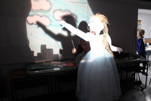

 noun
-
The definition of a tinker is a person who can make minor repairs, an unskilled worker or a clumsy worker.
- A gypsy is an example of a tinker.
- A repairman is an example of a tinker.
verb
-
To tinker is defined as to play around with something, or to try to change or fix it.
When you play around with the controls on the dishwasher to try to make the dishwasher work better and you end up messing it up, this is an example of a situation where you tinker with the dishwasher.
* from http://www.yourdictionary.com/
What does this have to do with education and innovation? There is a movement gaining recent attention, that sets up learning as a place to make (construct), hack (deconstruct), design, experiment, question, explore, discover through hands on experiences. You have likely heard of the International STEM conference coming to Saskatoon in the fall 2015 – science, technology, engineering and math integrated into innovative projects. There are many activities for students and some free events – check it out. There is a parallel movement to add the arts to the equation and make it STEAM.

What are the habits of thinking we see in both the arts studio and the science lab?
- ability to envision or imagine that which was not there before
- connecting unlike ideas/concepts or qualities into new combinations with surprising results
- see problems as an opportunity to discover
- persist through failure, re/vision and redirect focus
- curiosity about the world and asking “what if …?”
- following notions down the rabbit hole into new territory
- playing
To tinker implies a sense of non-urgency. Freedom to see what happens. Or what does not happen. Do we value the time to play with an idea? Can we justify this approach within a faced paced classroom, in the pursuit of meeting outcomes (not to mention assessing the outcome? Is it possible to do both?

In an attempt to let children exercise and move while learning, this class has given them pedals under the desk. It helps them self regulate. (Hmmm. Looks like hamster wheels to me.)
We have become so disconnected from our bodies that “learning by doing and moving” is confused with “moving as I learn”. They are not the same thing at all. I am firm supporter of the self-regulation movement as it help children become self aware and to take control of the behaviour, often providing much needed relief throughout the day and they are able to become more successful. However, allowing all children (not just those with identified needs) to get on the floor, or move outside, with tools in their hands, to learn by doing with purpose, impacts the neurological development and learning for everyone.
I think it’s time to tinker with learning.
Why Kids Need to Tinker to Learn
STEM + Art: A Brilliant Combination


{kind=link}
{kind=link}
{kind=link}
{kind=link}
{kind=link}
{kind=link}
{kind=link}
{kind=link}